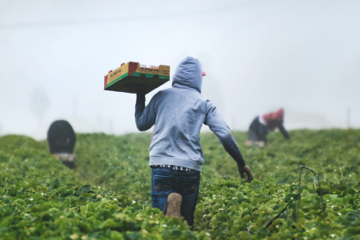

The world of agriculture is undergoing a transformative revolution, thanks to the rapid advancements in Artificial Intelligence (AI). While AI has already left its mark in various sectors like healthcare and transportation, it is now making significant inroads into agriculture, promising to increase efficiency, reduce waste, and enhance crop yields. In this article, we will explore some of the most exciting AI technologies that are reshaping the agricultural landscape.